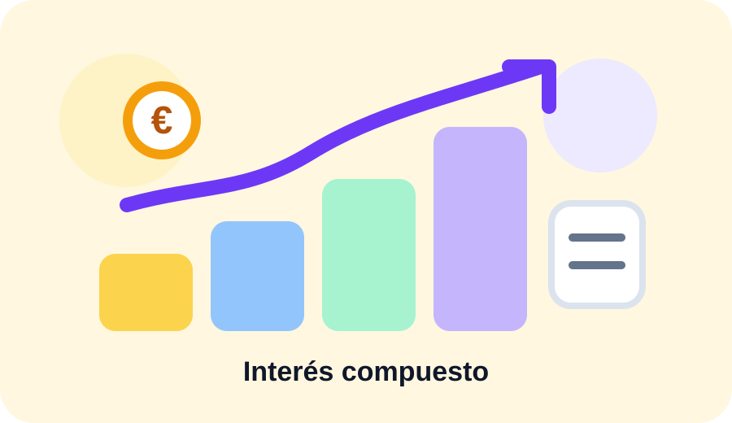

Resumen rápido
El interés compuesto aparece cuando los rendimientos se reinvierten y empiezan a generar nuevos rendimientos. Cuanto mayor sea el plazo, más visible puede ser el efecto.
Una simulación con 100 € al mes durante 20 años cambia mucho según la rentabilidad anual usada. Por eso conviene probar varios escenarios, no quedarse con una sola cifra.
Ejemplo: 100 € al mes durante 20 años
Si aportas 100 € al mes durante 20 años, habrás aportado 24.000 € en total, sin contar el capital inicial. El valor final dependerá de la rentabilidad anual media y de si los rendimientos se reinvierten.
Con rentabilidades moderadas, la diferencia entre lo aportado y el resultado final puede crecer de forma notable al final del periodo. Ese crecimiento no es lineal: suele acelerarse con los años.
Por qué el plazo pesa tanto
El tiempo es una de las variables más importantes. A corto plazo, el resultado depende mucho de las aportaciones. A largo plazo, los intereses acumulados empiezan a tener más peso.
Empezar antes con una cantidad pequeña puede ser más potente que empezar tarde con una cantidad mayor, siempre que el escenario sea sostenible y realista.
Qué rentabilidad anual usar
No existe una rentabilidad universal. Depende del producto, del riesgo, del plazo y de las condiciones del mercado. Para una simulación prudente, es mejor comparar escenarios conservadores, medios y optimistas.
La calculadora de Numora permite cambiar el porcentaje para ver cómo varía el resultado. No debe interpretarse como una previsión garantizada.
Qué no incluye una simulación simple
- Impuestos sobre rendimientos.
- Comisiones de productos financieros.
- Inflación y pérdida de poder adquisitivo.
- Años negativos o cambios bruscos de mercado.
- Riesgo de pérdida de capital.
Preguntas frecuentes
¿El interés compuesto garantiza beneficios?
No. Es una forma de calcular crecimiento acumulado, pero una inversión real puede subir, bajar o generar pérdidas.
¿Es mejor aportar cada mes o una vez al año?
Depende del caso. Aportar periódicamente ayuda a crear hábito y puede suavizar entradas, pero el resultado depende de rentabilidad, plazo y producto.
¿La calculadora tiene en cuenta la inflación?
No. Muestra un resultado nominal. Para aproximar poder adquisitivo real habría que descontar la inflación.